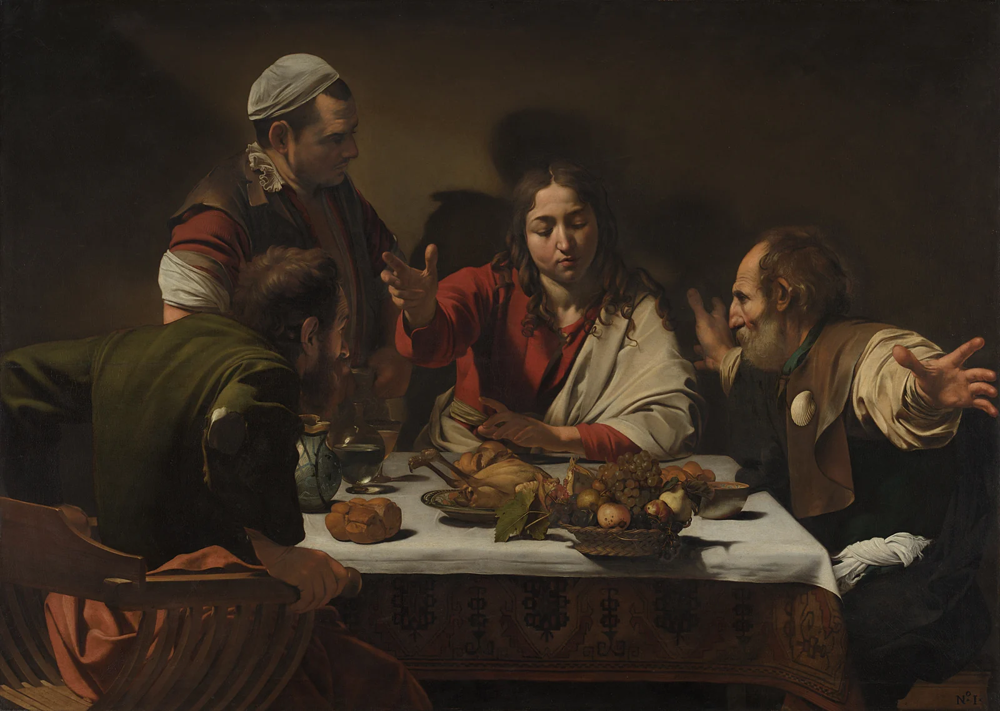

Gotham City · Confidential
Are you Batman?
The truth, at last
Only I can be Batman.
Now you may enter.
Your secret is safe with me. The portrait has already told three people. Jerry is waiting on the other side.
Come in
Gotham City · Confidential
The truth, at last
Now you may enter.
Your secret is safe with me. The portrait has already told three people. Jerry is waiting on the other side.
Come inCaravaggio, The Supper at Emmaus, 1601